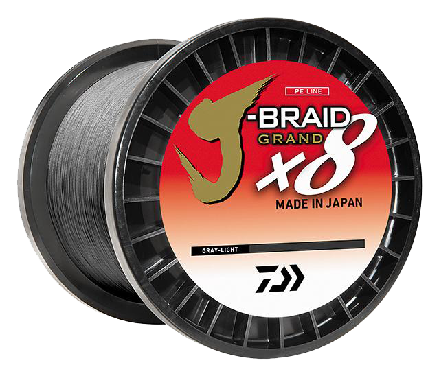

Daiwa J-Braid Grand X8 Braid
Diameter chart, reel capacity & backing guide

J-Braid Grand X8 is Daiwa's supple, eight-strand IZANAS braid. It is a separate product from standard J-Braid X8 and Expedition. Choose a strength below to compare its diameter, estimate how much your reel holds and plan a working braid section with or without backing.
- Construction
- Eight-strand IZANAS braid
- Listed strengths
- 8-150 lb
- Line type
- Braid main line
Is J-Braid Grand X8 right for your setup?
J-Braid Grand X8 is worth considering when you want a supple, eight-strand braid as your main line on spinning or baitcasting tackle. Start with a strength that suits your rod, lure and cover; on a baitcaster, avoid choosing an extremely thin diameter just to gain capacity. Add a leader if the presentation calls for one, then use ReelCalc to plan enough braid for casting, fish runs and retying, with backing underneath if needed.
How much J-Braid Grand X8 will fit?
Calculated estimates, not measured fills. Stop at the reel manufacturer's fill level even if some line remains.
Daiwa J-Braid Grand X8 diameter chart
Specifications below cover Daiwa's US Gray Light range. Check the diameter and package length on your spool if you have another version. The 6 lb entry is omitted pending clarification of its diameter figures.
| Strength | Inches | mm | Spools (yd) |
|---|---|---|---|
| 0.005 | 0.130 | 150, 300, 3000 | |
| 0.006 | 0.150 | 150, 300, 3000 | |
| 0.008 | 0.190 | 150, 300, 3000 | |
| 0.009 | 0.230 | 150, 300, 3000 | |
| 0.011 | 0.280 | 150, 300, 3000 | |
| 0.013 | 0.320 | 150, 300, 3000 | |
| 0.014 | 0.360 | 150, 300, 3000 | |
| 0.016 | 0.410 | 150, 300, 3000 | |
| 0.017 | 0.430 | 300, 3000 | |
| 0.020 | 0.500 | 3000 | |
| 0.022 | 0.550 | 3000 | |
| 0.026 | 0.660 | 2500 |
Choosing your J-Braid Grand X8 strength
The 20 lb row is .009 inch / .23 mm; 30 lb is .011 inch / .28 mm. Moving up in strength uses more spool space even within the same Grand X8 family.
The chart starts at 8 lb. The manufacturer's 6 lb inch and millimeter figures need clarification, so that size is not used in these estimates.
At the heavy end, 100 and 120 lb are verified in 3,000-yard bulk spools; the 150 lb row is 2,500 yards. Package length cannot be copied across the entire strength range.
Specification-based guidance, not a hands-on J-Braid Grand X8 test. Capacity results are estimates, not measured fills.
Want a guided recommendation?
Continue in the Setup WizardSame pound test, different diameters
At your selected strength
Loading diameter comparisons...
What changes with another line?
Nearby diameters in the line database
| Line | Strength | Inches | Difference |
|---|---|---|---|
| Loading line database... | |||
Backing, working line & leaders
Filler lengths vary by strength
The chart lists 150- and 300-yard fillers plus 3,000-yard bulk for 8-65 lb. The 80 lb entry has 300 and 3,000 yards; check the selected strength for its available package lengths.
Secure the braid before filling
Follow the reel maker's braid-attachment instructions. On a smooth arbor, a mono base can provide grip; additional backing can fill the space beneath your chosen working length.
Plan the braid you will actually fish
Allow enough braid for your longest casts or deployments, fish runs and retying. A bulk spool can supply several reels; use backing for the remaining space below each planned working section.
How Much Fits on These Reels?
Estimated full-spool capacity for the J-Braid Grand X8 strength selected above, with no backing. These are calculated examples, not physical tests or recommendations for every pairing.
Loading capacity estimates...
J-Braid Grand X8 questions, answered
Is Grand X8 standard J-Braid X8?
No. Grand X8 uses Daiwa's eight-strand IZANAS construction and has its own diameter chart. Use the Grand X8 entry for your selected strength rather than substituting standard J-Braid X8 specifications.
Does every strength come in 150 yards?
No. The 150-yard options in this chart end at 65 lb. Check the package lengths shown for your selected strength before planning a full fill or a shorter working section.
Should I fill the reel entirely with Grand X8?
Use enough braid for the fishing you plan, including long casts or deployments, fish runs and trimming. If that is less than the full-spool estimate, mono backing can fill the space underneath. Follow the reel maker's attachment and fill-level guidance.
Specifications & sources
Checked 2026-09-13 against Daiwa's product-linked LINES specification sheet. The selected US range has complete matching specification rows. Missing or conflicting entries for other colors, including the Dark Green 100 lb diameter, have not been substituted into this chart.
Calculations use the catalog's listed inch diameters. Published inch and millimeter values may differ slightly because of rounding.
- Daiwa official product evidence 1 Exact model identity and manufacturer specifications; reviewed 2026-09-13.
- Daiwa official product evidence 2 Supporting specification, package or chart evidence; see source note for scope.